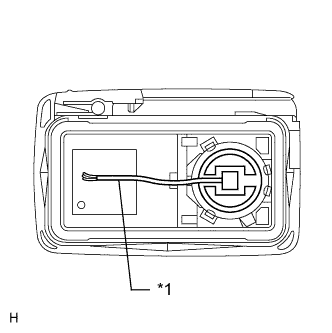

СИСТЕМА ПОСАДКИ И ЗАПУСКА (для моделей с функцией посадки) > Не работают все функции блокировки и разблокировки дверей системы посадки, а также системы дистанционной блокировки дверей |
| 1.ПРОВЕРЬТЕ СИСТЕМУ УПРАВЛЕНИЯ ЗАМКАМИ ДВЕРЕЙ |
Приводя в действие выключатель системы блокировки дверей на главном переключателе сети мультиплексной связи, убедитесь, что двери блокируются и разблокируются в соответствии с состоянием выключателя (Нажмите здесь).
|
| ||||
| OK | |
| 2.ПРОВЕРЬТЕ ПЕРЕДАТЧИК ЭЛЕКТРОННОГО КЛЮЧА |
В случае использования другого зарегистрированного передатчика электронного ключа проверьте правильность действия функций системы посадки и системы дистанционной блокировки (Нажмите здесь).
| Результат | Следующий шаг |
| Функция системы посадки работает | А |
| Функции посадки не работают | B |
|
| ||||
| А | |
| 3.ПРОВЕРЬТЕ ПЕРЕДАТЧИК ЭЛЕКТРОННОГО КЛЮЧА (СВЕТОДИОД) |
Убедитесь, что светодиод передатчика загорается 3 раза при трехкратном нажатии каждого выключателя.
| Результат | Следующий шаг |
| Светодиод передатчика не загорается, если выключатель нажат 3 раза | А |
| Светодиод передатчика загорается 3 раза при трехкратном нажатии выключателя | B |
| Светодиод передатчика не загорается при втором или третьем нажатии | C |
|
| ||||
|
| ||||
| А | |
| 4.ПРОВЕРЬТЕ НАПРЯЖЕНИЕ БАТАРЕИ ПЕРЕДАТЧИКА |
|  |
Извлеките батарею из неработающего передатчика электронного ключа (Нажмите здесь).
Присоедините провод (диаметром 0,6 мм (0,0236 дюйма) или менее, включая оплетку провода) клейкой лентой или аналогичным материалом к отрицательному контакту.
| *1 | Проволочный вывод |
Аккуратно потяните вывод из указанного на рисунке положения и установите ранее снятую батарею передатчика.
С помощью осциллографа проверьте форму сигнала напряжения батареи передатчика.
| Позиция | Описание |
| Контакты для подключения диагностического прибора | Положительный (+) вывод батареи - отрицательный (-) вывод батареи |
| Настройки прибора | 0,5 В/дел., 100 мс/дел. |
| Условие | Зажигание выключено, все двери закрыты, и датчик блокировки нажат |
| Заданные условия | 2,5–3,2 В (см. осциллограмму) |
| *1 | Точка измерения |
|
| ||||
| OK | ||
| ||
| 5.ПРОВЕРЬТЕ ПРОХОЖДЕНИЕ РАДИОВОЛН |
Поднесите передатчик электронного ключа к приемнику системы блокировки дверей и проверьте работу функций системы дистанционной блокировки дверей и системы посадки.
|
| ||||
| OK | ||
| ||
| 6.ПРОВЕРЬТЕ ПИТАНИЕ |
Убедитесь, что дисплей на щитке приборов выключается при выключении зажигания.
|
| ||||
| OK | |
| 7.ПРОВЕРЬТЕ ЖГУТ ПРОВОДОВ И РАЗЪЕМ (ЭБУ СЕРТИФИКАЦИИ – АККУМУЛЯТОРНАЯ БАТАРЕЯ И МАССА) |
Отсоедините разъем G38 ЭБУ.
Измерьте напряжение в соответствии со значениями, приведенными в таблице.
| Контакты для подключения диагностического прибора | Условие | Заданные условия |
| G38-17 (CUTB) - масса | Всегда | 11 - 14 В |
| G38-1 (+B) - масса | Всегда | 11 - 14 В |
Измерьте сопротивление в соответствии со значениями, приведенными в таблице ниже.
| Контакты для подключения диагностического прибора | Условие | Заданные условия |
| G38-15 (E) - масса | Всегда | Менее 1 Ом |
| *a | Вид спереди разъема со стороны жгута проводов: (к ЭБУ сертификации) |
|
| ||||
| OK | |
| 8.ПРОВЕРЬТЕ ЖГУТ ПРОВОДОВ И РАЗЪЕМ (ПРИЕМНИК СИСТЕМЫ УПРАВЛЕНИЯ ЗАМКАМИ ДВЕРЕЙ - ЭБУ СЕРТИФИКАЦИИ И МАССА) |
Отсоедините разъем R17 приемника.
Отсоедините разъем G39 ЭБУ.
Измерьте сопротивление в соответствии со значениями, приведенными в таблице ниже.
| Контакты для подключения диагностического прибора | Условие | Заданные условия |
| R17-4 (+5) - G39-5 (RCO) | Всегда | Менее 1 Ом |
| R17-5 (DATA) - G39-15 (RDA) | Всегда | Менее 1 Ом |
| R17-2 (RSSI) - G39-16 (RSSI) | Всегда | Менее 1 Ом |
| G39-5 (RCO) - масса | Всегда | 10 кОм или более |
| G39-15 (RDA) - масса | Всегда | 10 кОм или более |
| G39-16 (RSSI) - масса | Всегда | 10 кОм или более |
| R17-1 (GND) - масса | Всегда | Менее 1 Ом |
|
| ||||
| OK | |
| 9.ПРОВЕРЬТЕ РАБОТУ ПРИЕМНИКА СИСТЕМЫ УПРАВЛЕНИЯ ЗАМКАМИ ДВЕРЕЙ |
Временно замените приемник системы управления замками дверей на новый или исправный.
Убедитесь, что функции системы дистанционного управления и системы посадки работают нормально.
|
| ||||
| OK | ||
| ||